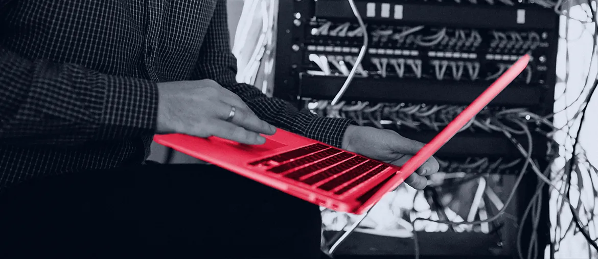

Map one SATCOM OSS slice: scenario input, Python service, queue task, WebSocket update, and UI state.
Our read
The Fullstack Python Developer signal says Amphinicy is adding hands for a state-of-the-art SATCOM OSS, not a small maintenance task. The job text names Python, REST APIs, React or Angular, Flask, Dask, Celery, message queues, WebSockets, and satellite link budgets. That mix points to a hard join between domain math, backend load, and clear web flows. Monica v7 also moved toward distributed, cloud-based systems with Remote Agents and a rewritten Angular frontend. If those streams grow at once, validation, integration, and release work can slow the core team.
Where we'd start
Add contract tests around that slice, then review Monica and ViSAGE rollback, telemetry, and RBAC flows.
What we'd do
- 1 Audit the delivery sliceTrace simulation data to UI state, with queue, WebSocket, and REST API risk notes.
- 2 Build one tested pathCreate a Python service slice for one mission scenario, tied to Angular or React screens.
- 3 Harden demos and rollbackImprove Kubernetes and CI/CD paths for repeatable demos, rollback, and secure shared test environments.
- 4 Raise release confidenceAdd QA automation for telemetry, RBAC, and service-state changes so each release keeps operator trust.
Who is Elinext
Elinext is a full-cycle software development company, working since 1997 with about 700 in-house specialists and no freelancers. For Amphinicy, the fit is a focused team model: senior web, backend, QA, and DevOps people working under your PO or PM. We also bring ISO 9001 and ISO 27001 practices for quality and security. Our delivery history includes Broadcom Siemens TRUMPF TUI Parrot and Volkswagen. That base lets us support a small pilot without asking your core satellite experts to train a large vendor team.
Proof

CI/CD optimization for infrastructure software
Elinext rebuilt a release pipeline for an infrastructure management provider. Development time was reduced by 40%.
Read the case study
Virtualization manager for telecom infrastructure
Python, Django, Celery, and RabbitMQ helped a US telecom company manage internal infrastructure.
Read the case study